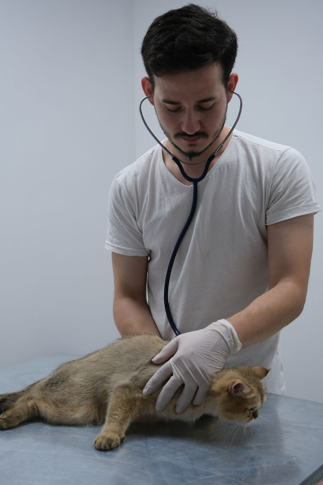
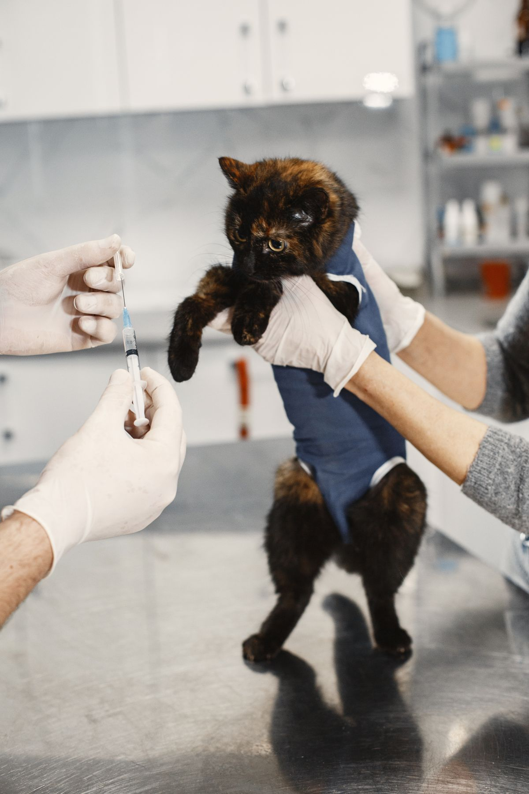

Visit Bismarck Animal Clinic & Hospital
An AAHA-accredited veterinary hospital in Bismarck, for cats and dogs.
Address: 1414 E Calgary Ave, Bismarck, ND 58503
Hours: Monday to Friday 7:30 AM to 5:00 PM.
Phone: (701) 222-8255
Gallery


All gallery photos are stock photos, labeled as such. They show veterinary check-ups, not this hospital's patients or staff.
Contact
Bismarck Animal Clinic & Hospital serves Bismarck, ND. Questions? Call (701) 222-8255.